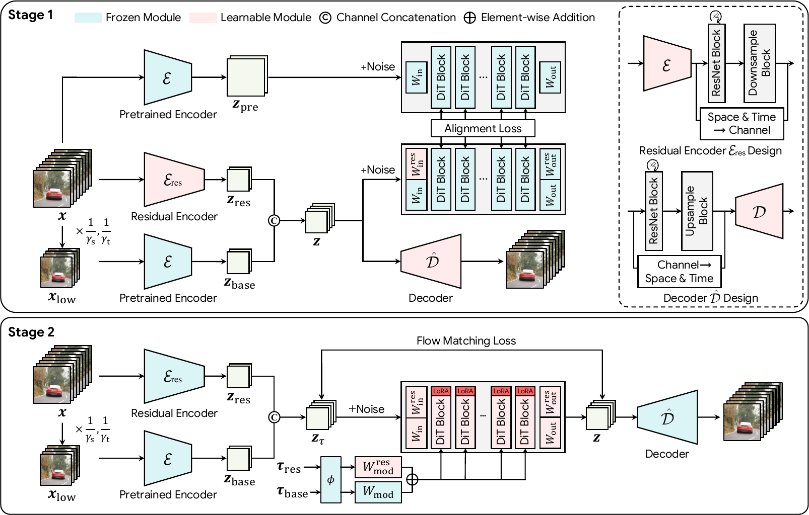
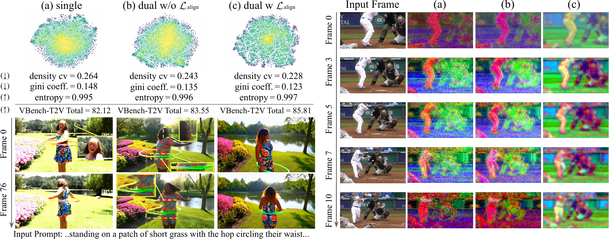
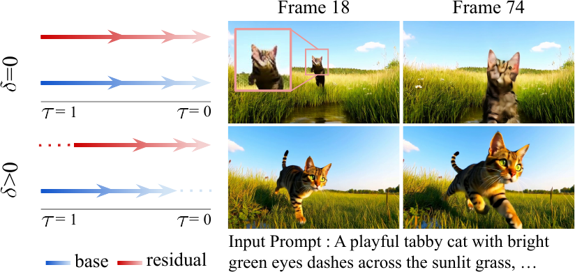

GRACE : Generation-Aware Latent Compression
for Efficient Video Generation
Explore more of our results in the gallery →
This work was done while the first three authors were interns at Kakao Corp.
Inference time = how long it takes to make one 81-frame video, autoencoder included. Measured on one A100 80GB at 50 steps, CFG 5, batch 1, bf16.
Except for the golden retriever demo, the prompts shown are the VBench captions the videos are scored against.
GRACE fine-tunes the pretrained Wan2.1 autoencoder and DiT to generate from 8× fewer latent tokens. It matches the pretrained model on VBench while generating 11.1× faster at 480×832×81 and 15.5× faster at 736×1280×81.
Overview video · 1 min 55 s
Abstract
Highly compressed video autoencoders offer an effective way to accelerate video diffusion models, as the Diffusion Transformer (DiT) operates on far fewer tokens. However, such autoencoders are challenging to train, since a higher compression ratio degrades reconstruction quality and recovering it requires more channels, which is known to slow the convergence of the DiT. The compressed latent also differs from the one the DiT was trained on, so the pretrained DiT must be either retrained from scratch or adapted at considerable cost. Compressing the autoencoder the DiT was trained with appears to preserve compatibility, yet optimizing it for reconstruction alone still shifts the latent away from the distribution the DiT has learned. To address this, we propose Generation-Aware Latent Compression for Efficient Video Generation (GRACE), a two-stage framework that compresses a pretrained video autoencoder while keeping it compatible with the pretrained DiT. Specifically, we keep a frozen base latent from the pretrained encoder and learn a residual latent for the information lost under stronger compression, while aligning the compressed latent with the pretrained latent in the feature space of the frozen DiT so that the autoencoder is optimized for generation. We then adapt the DiT with lightweight fine-tuning and asymmetric denoising, where the base is denoised ahead of the residual. GRACE reduces the token count of Wan2.1-I2V-14B by 8× and its latency by 11.1× at 480×832×81, while matching the generation quality of the pretrained pipeline before compression on VBench.
Method
GRACE compresses Wan2.1's latent from f8t4p2 to f16t8p2 (32.8k → 4.3k tokens at 480×832) in two stages. In both, the pretrained pipeline guides its own compression.

Overall architecture. Stage 1 trains the autoencoder against the frozen DiT. Stage 2 adapts the DiT with LoRA, denoising zbase ahead of zres.
Autoencoder training
Dual-latent representation
A frozen base latent from the pretrained Wan2.1 encoder anchors the compressed latent in the space the DiT already knows. A learned residual latent carries the detail and motion that stronger compression throws away.
Generation-aware alignment
Instead of reconstruction losses alone, the compressed latent is matched to the pretrained one inside the frozen DiT's feature space, so the autoencoder is optimized for generation.

Effect of the dual latent and Lalign. (a) single latent, (b) dual latent without Lalign, (c) Ours. The latent becomes more uniform and its principal components follow objects across frames.
DiT adaptation
Asymmetric denoising
The DiT's input and output projections are extended to the residual channels, with LoRA on the transformer blocks. The base is denoised ahead of the residual by an offset δ in the same forward pass, so the residual always builds on a more settled base, at no extra sampling cost.

Denoising order. Keeping zbase δ ahead recovers facial detail under large motion.
Qualitative comparison
Same caption and seed for every model, each run with its own prompt expansion. Videos in a row play in sync.
More comparisons, including GRACE-only samples, are in the gallery.
Quantitative results
| Latency (s) ↓ | VBench-T2V ↑ | VBench-I2V ↑ | ||||||||
|---|---|---|---|---|---|---|---|---|---|---|
| Model | Config | Tokens | T2V | I2V | Quality | Semantic | Total | I2V | Quality | Total |
| Wan2.1-14B | f8t4c16p2 | 32.8k | 851.5 | 863.2 | 85.24 | 78.70 | 83.93 | 95.82 | 80.01 | 87.92 |
| Open-Sora 2.0 | f32t4c128p1 | 8.2k | 138.6 | 138.4 | 78.80 | 72.35 | 77.51 | 91.17 | 76.96 | 84.07 |
| DC-Gen | f32t4c32p1 | 8.2k | 157.1 | 165.0 | 85.85 | 79.70 | 84.62 | 88.25 | 80.01 | 84.13 |
| LTX-Video 0.9.7 | f32t8c128p1 | 4.3k | 99.6 | 104.1 | 82.88 | 64.31 | 79.17 | 95.62 | 80.32 | 87.97 |
| Baseline | f16t8c32p2 | 4.3k | 76.1 | 77.8 | 83.21 | 77.75 | 82.12 | 93.67 | 79.21 | 86.44 |
| GRACE (Ours) | f16t8c32p2 | 4.3k | 75.8 | 77.7 | 86.02 | 84.98 | 85.81 | 95.48 | 80.31 | 87.90 |
Video generation on VBench at 480×832×81. GRACE uses 8× fewer tokens than Wan2.1-14B and runs 11.1× faster. Latency is end to end on a single A100.
| Latency (s) ↓ | VBench-T2V ↑ | VBench-I2V ↑ | ||||||||
|---|---|---|---|---|---|---|---|---|---|---|
| Model | Config | Tokens | T2V | I2V | Quality | Semantic | Total | I2V | Quality | Total |
| Wan2.1-14B | f8t4c16p2 | 77.3k | 3361.3 | 3396.8 | 84.69 | 76.01 | 82.96 | 95.56 | 80.20 | 87.88 |
| Open-Sora 2.0 | f32t4c128p1 | 19.3k | 425.4 | 425.4 | 80.73 | 78.16 | 80.22 | 93.72 | 77.82 | 85.77 |
| DC-Gen | f32t4c32p1 | 19.3k | 456.4 | 550.7† | 86.08 | 78.80 | 84.62 | 92.04 | 80.73 | 86.39 |
| LTX-Video 0.9.7 | f32t8c128p1 | 10.1k | 264.2 | 274.6 | 84.46 | 63.58 | 80.29 | 95.71 | 81.79 | 88.75 |
| GRACE (Ours) | f16t8c32p2 | 10.1k | 215.6 | 218.8 | 85.42 | 82.04 | 84.74 | 95.54 | 80.15 | 87.84 |
Video generation on VBench at 736×1280×81, 15.5× faster than Wan2.1-14B. † measured with spatial tiling in the VAE.
| Reconstruction, 256×256×81 | Generation | |||||||
|---|---|---|---|---|---|---|---|---|
| Autoencoder | Config | Training | Tokens | PSNR ↑ | SSIM ↑ | LPIPS ↓ | rFVD ↓ | I2V total ↑ |
| Wan2.1-VAE | f8t4c16p2 | scratch | 32.8k | 35.15 | 0.958 | 0.016 | 1.13 | 87.92 |
| Step-Video-VAE | f16t8c64p1 | scratch | 17.2k | 33.88 | 0.950 | 0.029 | 3.16 | 84.05 |
| Video DC-AE | f32t4c128p1 | scratch | 8.2k | 34.61 | 0.956 | 0.024 | 3.70 | 84.94 |
| LTX-VAE | f32t8c128p1 | scratch | 4.3k | 31.97 | 0.914 | 0.051 | 19.53 | 87.06 |
| Baseline | f16t8c32p2 | fine-tuned | 4.3k | 33.76 | 0.956 | 0.031 | 13.11 | 86.44 |
| GRACE-VAE (Ours) | f16t8c32p2 | fine-tuned | 4.3k | 32.63 | 0.930 | 0.032 | 13.53 | 87.86 |
Autoencoder comparison. Better reconstruction does not mean better generation: GRACE-VAE reaches the highest VBench-I2V total among compressed autoencoders at the fewest tokens.
Blind user study, 39 raters, 156 votes per setting, baseline, and criterion. Values are the percentage of votes.
Ablation
Design components
| Reconstruction | VBench-T2V ↑ | VBench-I2V ↑ | ||||||||||
|---|---|---|---|---|---|---|---|---|---|---|---|---|
| Setting | Dual | ℒalign | δ > 0 | PSNR ↑ | LPIPS ↓ | rFVD ↓ | Quality | Semantic | Total | I2V | Quality | Total |
| (I) Wan2.1-I2V-14B | – | – | – | 35.15 | 0.016 | 1.13 | 85.24 | 78.70 | 83.93 | 95.82 | 80.01 | 87.92 |
| (II) Baseline | × | × | × | 33.76 | 0.031 | 13.11 | 83.21 | 77.75 | 82.12 | 93.67 | 79.21 | 86.44 |
| (III) + dual latent | ✓ | × | × | 33.10 | 0.031 | 13.89 | 84.77 | 78.65 | 83.55 | 93.96 | 79.32 | 86.64 |
| (IV) + ℒalign | ✓ | ✓ | × | 32.63 | 0.032 | 13.53 | 85.22 | 82.55 | 84.68 | 95.23 | 79.78 | 87.51 |
| (V) + δ > 0 (Ours) | ✓ | ✓ | ✓ | 32.63 | 0.032 | 13.53 | 86.02 | 84.98 | 85.81 | 95.61 | 80.11 | 87.86 |
| (VI) Baseline, DiT from scratch | × | × | × | 33.76 | 0.031 | 13.11 | 74.20 | 58.40 | 71.04 | 53.06 | 73.94 | 63.50 |
Each component improves generation on both tasks. Row (VI) keeps the baseline autoencoder but trains the DiT from scratch for the same number of steps.
Alignment target
| Alignment target | PSNR ↑ | rFVD ↓ | Quality | Semantic | Total |
|---|---|---|---|---|---|
| None | 33.10 | 13.89 | 84.77 | 78.65 | 83.55 |
| V-JEPA 2.1 features | 32.61 | 13.93 | 84.98 | 80.04 | 83.99 |
| Pretrained DiT features (Ours) | 32.63 | 13.53 | 85.22 | 82.55 | 84.68 |
Aligning inside the pretrained DiT beats a video foundation model target (V-JEPA 2.1) on every generation score.
Denoising order
| Denoising order | I2V ↑ | Quality ↑ | Total ↑ |
|---|---|---|---|
| τbase = τres (δ = 0) | 95.23 | 79.78 | 87.51 |
| τbase > τres (δ < 0) | 94.61 | 79.72 | 87.17 |
| τbase < τres (δ > 0, ours) | 95.61 | 80.11 | 87.86 |
Denoising the base first helps; reversing the order falls below the synchronous schedule.
BibTeX
@article{kim2026grace,
title = {Generation-Aware Latent Compression
for Efficient Video Generation},
author = {Kim, Jiyoung and Cho, Paul Hyunbin and Nam, Jisu
and Lee, Donghoon and Go, Hyunsung and Lee, Yeonkyeong
and Kim, Hansaem and Kim, Seungryong},
journal = {arXiv preprint arXiv:[id]},
year = {2026}
}